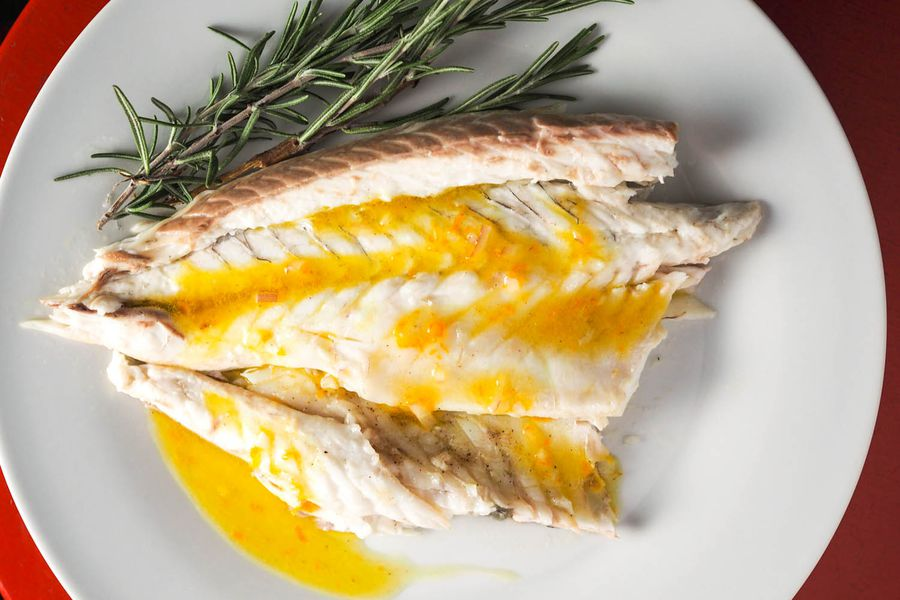

Wild Roasted Branzino

Tell Me More!
Branzino, branzini being the plural also known as spigola or ragno in Italy, is a European sea bass primarily a
salt water species, known to venture into fresh waters. To the great surprise of many, most of the branzino
available in the United States is Mediterranean farm raised, however wild branzino is certainly available from a
number of sources. The size of a whole fish ranges from 1 to 1½ pounds, making it perfect for serving at home. The
moist white flesh is semi firm with some small bones.
Start With The Finest Ingredients
- 2 Branzini, 1 to 1½ pound each, cleaned, scaled, with head & tail left intact
- 1 pint of cherry tomatoes, washed and stem portion removed
- Small bunch of thyme, washed and patted dry
- 2 to 3 cloves of garlic, peeled and thinly sliced
- 4 to 5 Tbs. extra virgin olive oil
- Freshly ground black pepper
- Kosher salt
Hey Chef, Time To Cook!
- Preheat the oven to 375º F, oil a roasting pan with 2 Tbs. of the olive oil. Rinse the prepared fish under cold
running water and dry with paper towels.
- Season the cavity and both sides of the fish with salt and pepper. Arrange 3 or 4 slices of garlic and several
sprigs of the thyme for each of the branzini in the roasting pan, place each fish over the garlic & thyme sprigs
in the pan; repeat by placing the sliced garlic & thyme on the top side of the fish. Place 2 or 3 slices of garlic
& 2 sprigs of thyme inside the cavity of the branzini.
- Scatter the cherry tomatoes around the branzini, season lightly with salt & pepper and thyme. Drizzle the
remaining olive oil over the fish and tomatoes and place into the preheated oven.
- Check the fish after about 15 minutes, shaking the pan to prevent the fish from sticking. The tomatoes will
begin to brown and release liquid which will combine with the moisture from the fish to create a natural sauce.
Spoon some of the sauce over the fish, garnish with a few sprigs of thyme and serve immediately.
Enjoy!